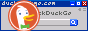
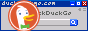

Welcome!
My name is Cody and I am a Polish programmer and musician
I am a huge fan of retro programming and old software. I love hugs :)


Check out my socials and join my Telegram channel to hear more from me!
My projects
Thanks for visiting the website!